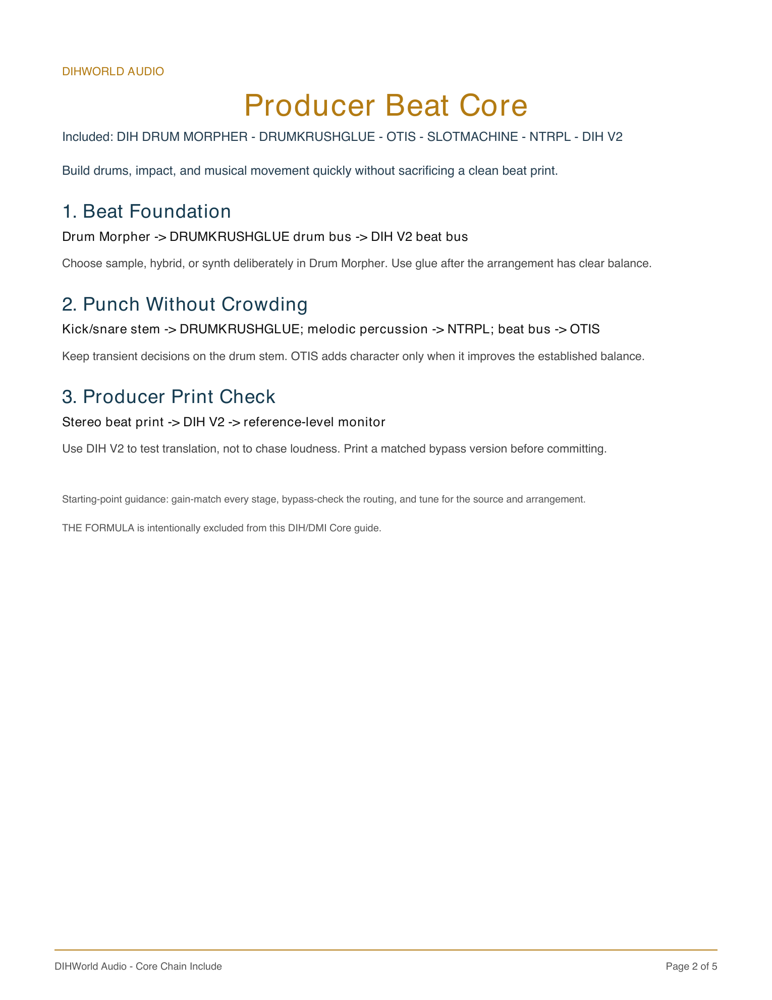
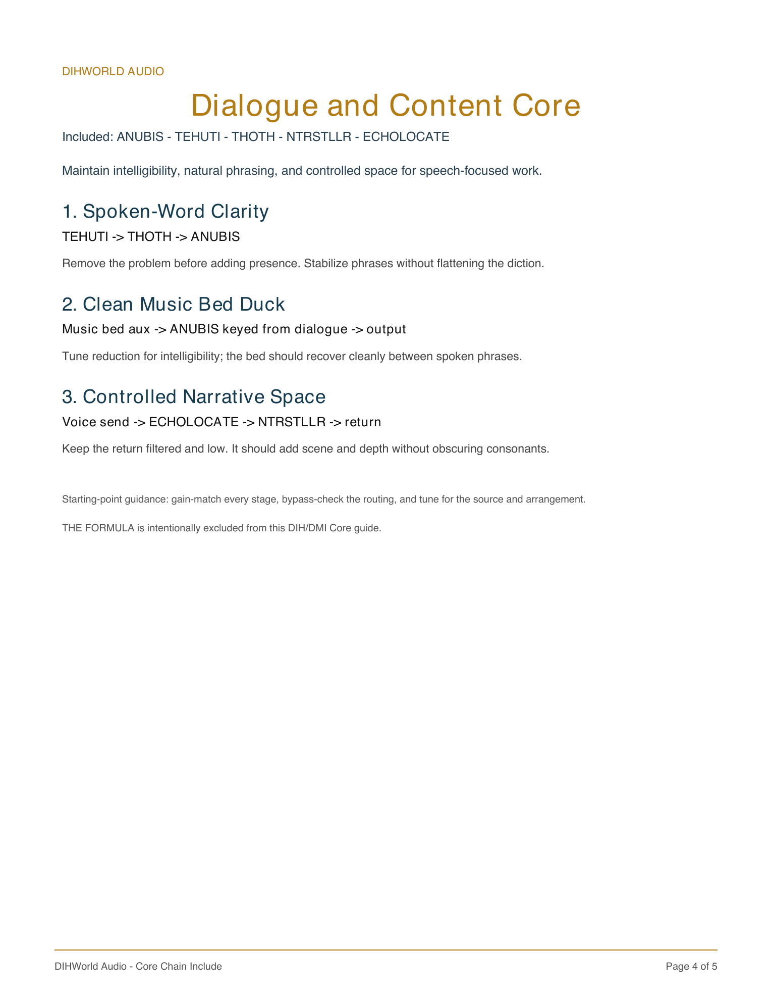
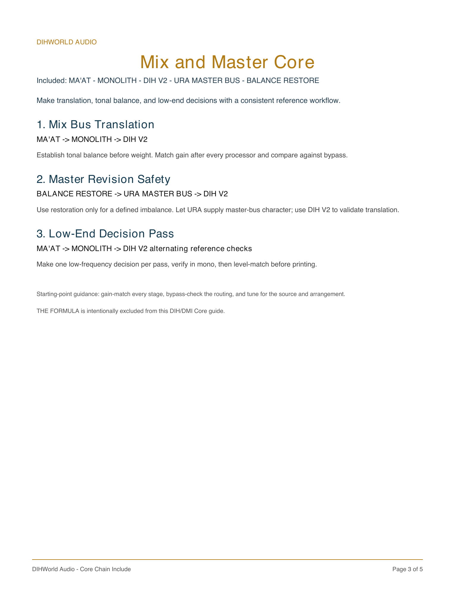
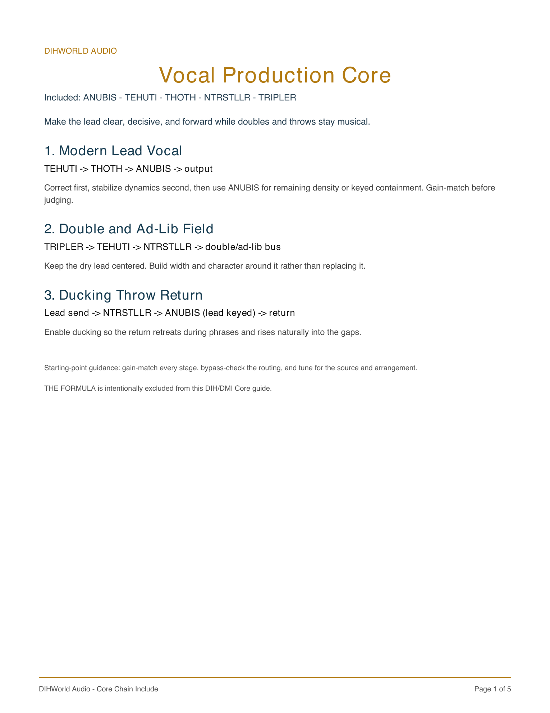
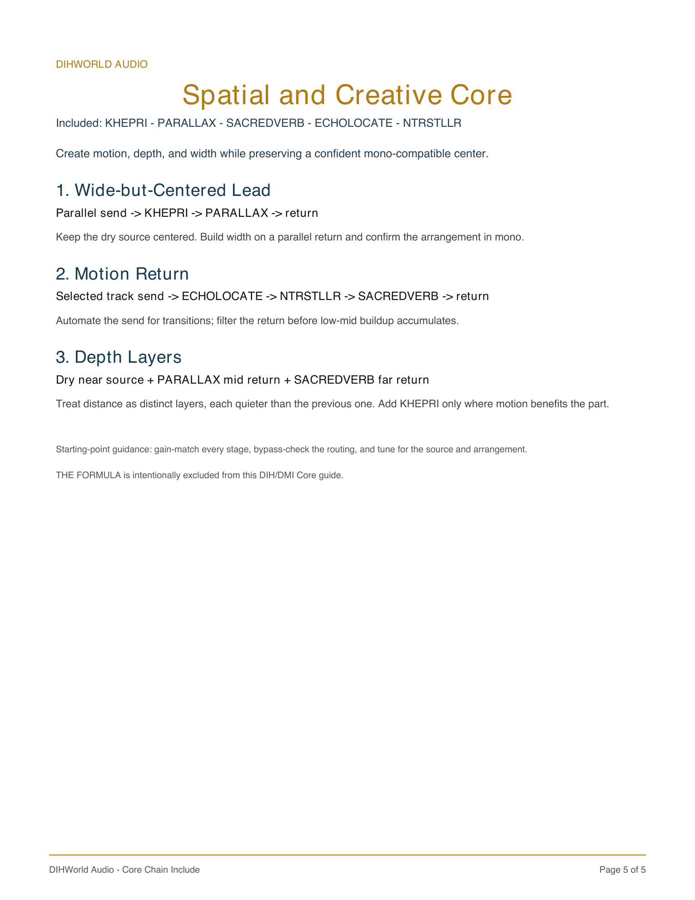

DIHWORLD AUDIO · CHEAT SHEETS
DIH Chain Maps
Five visual starting points for real sessions. Choose the lane that matches the job, then open the full Hybrid Chain Library for gain-matched, source-aware recipes.
Use the maps as starting points, not automatic stacks. Keep the source identity intact, use one clear job per stage, and treat a sidechain as detector/control information only. Compare at matched loudness before committing.




